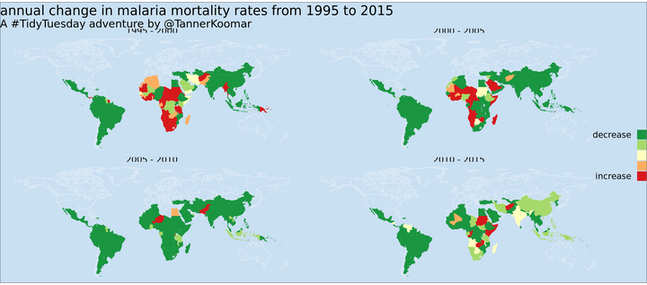
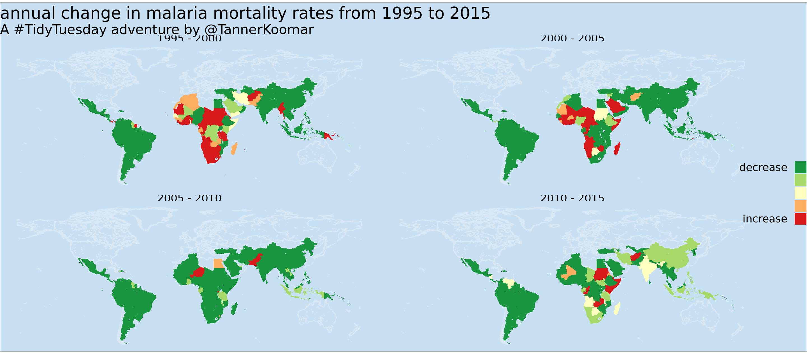

Tidy Tuesday: Malaria

knitr::opts_chunk$set(echo = TRUE)
library(tidyverse)## ── Attaching packages ───────────────────────────────────────────────────────────── tidyverse 1.3.0 ──## ✓ ggplot2 3.3.0.9000 ✓ purrr 0.3.3
## ✓ tibble 2.1.3 ✓ dplyr 0.8.3
## ✓ tidyr 1.0.0 ✓ stringr 1.4.0
## ✓ readr 1.3.1 ✓ forcats 0.4.0## ── Conflicts ──────────────────────────────────────────────────────────────── tidyverse_conflicts() ──
## x dplyr::filter() masks stats::filter()
## x dplyr::lag() masks stats::lag()library(geojsonio)##
## Attaching package: 'geojsonio'## The following object is masked from 'package:base':
##
## prettylibrary(showtext) ## for google fonts## Loading required package: sysfonts## Loading required package: showtextdbdat_death <- read_csv("https://github.com/rfordatascience/tidytuesday/raw/master/data/2018/2018-11-13/malaria_deaths.csv")## Parsed with column specification:
## cols(
## Entity = col_character(),
## Code = col_character(),
## Year = col_double(),
## `Deaths - Malaria - Sex: Both - Age: Age-standardized (Rate) (per 100,000 people)` = col_double()
## )dat_age <- read_csv("https://github.com/rfordatascience/tidytuesday/raw/master/data/2018/2018-11-13/malaria_deaths_age.csv")## Warning: Missing column names filled in: 'X1' [1]## Parsed with column specification:
## cols(
## X1 = col_double(),
## entity = col_character(),
## code = col_character(),
## year = col_double(),
## age_group = col_character(),
## deaths = col_double()
## )dat_inc <- read_csv("https://github.com/rfordatascience/tidytuesday/raw/master/data/2018/2018-11-13/malaria_inc.csv")## Parsed with column specification:
## cols(
## Entity = col_character(),
## Code = col_character(),
## Year = col_double(),
## `Incidence of malaria (per 1,000 population at risk) (per 1,000 population at risk)` = col_double()
## )Let’s look at the change over time (increase or in)
dat_death <- dat_death %>%
filter(Year >= 1995,
Year <= 2015) %>%
mutate(lustrum = cut_number(Year, 4)) %>%
group_by(Code, lustrum) %>%
summarize(
"malaria death rate" = cor(`Deaths - Malaria - Sex: Both - Age: Age-standardized (Rate) (per 100,000 people)`, Year, method = "p" )
)
dat_inc <- dat_inc %>%
filter(`Incidence of malaria (per 1,000 population at risk) (per 1,000 population at risk)` != 0) %>%
group_by(Code) %>%
rename(
"malaria incidence rate" = `Incidence of malaria (per 1,000 population at risk) (per 1,000 population at risk)`
)
dat_age <- dat_age %>%
filter(year >= 1995,
year <= 2015,
deaths != 0) %>%
mutate(lustrum = cut_number(year, 4)) %>%
group_by(code, lustrum, age_group) %>%
rename(Code = "code", Year = "year") %>%
summarize(
"deaths per age" = cor(deaths, Year, method = "p" )
)get map of world
world <- geojson_read('https://github.com/simonepri/geo-maps/releases/download/v0.6.0/countries-land-10km.geo.json', what = "sp")
w <- sf::st_as_sf(world) %>% rename("Code" = "A3")
dat_w <- w %>%
left_join(dat_death) %>%
left_join(dat_age) %>%
left_join(dat_inc)
dat_w <- dat_w %>% mutate(
lustrum = case_when(
lustrum == "[1995,2000]" ~ "1995 - 2000",
lustrum == "(2000,2005]" ~ "2000 - 2005",
lustrum == "(2005,2010]" ~ "2005 - 2010",
lustrum == "(2010,2015]" ~ "2010 - 2015"
)
) %>% filter(!is.na(lustrum))
font_add_google("Josefin Sans")
showtext_auto(144)
malaria_plot <- dat_w %>% ggplot(
aes(
fill = cut_width(`malaria death rate`, center = 0, width = 0.5)
)
) +
geom_sf(aes(color = is.na(`malaria death rate`)))+
coord_sf(ndiscr = 0) +
theme_void() +
scale_color_manual(values = c("TRUE" = "#d9e8f5", "FALSE" = NA),
guide = 'none') +
scale_fill_brewer(palette = "RdYlGn",
direction = -1,
labels = c("decrease", "", "", "", "increase", ""),
guide = guide_legend(
label.position = "left",
override.aes = list(color = NA))
) +
theme(
plot.background = element_rect(fill = "#c9dff2"),
legend.title = element_blank(),
legend.text = element_text(),
legend.key = element_blank(),
text = element_text(family = "Josefin Sans", size = 18)
) +
ggtitle("annual change in malaria mortality rates from 1995 to 2015", "A #TidyTuesday adventure by @TannerKoomar") +
facet_wrap(. ~ lustrum, ncol = 2)
malaria_plot
Tanner Koomar
PhD Candidate
My research interests include computational genetics, machine learning and science communication